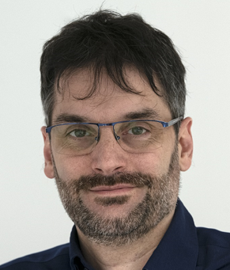

Marie Skłodowska-Curie Actions Postdoctoral Fellowship
Université Claude Bernard Lyon 1
PATCH aims to develop plasmonic nanoparticle-enhanced CuO/BiVO₄ heterojunction photoelectrodes for efficient solar-driven photoelectrocatalytic degradation of pollutants. The project combines pulsed laser ablation in liquids (PLAL), advanced spectroscopy, and photoelectrochemistry.
WP1: Synthesis of plasmonic nanoparticle enhanced CuO/BiVO4 heterojunction and its integration
WP2: Basic characterization of the synthesized materials and characterization of charge excitation and transfer at interfaces
WP3: Evaluation of photoelectrocatalytic performance and environmental impact
WP4: Project Management
WP5: Training
WP6: Dissemination and Communication

Marie Skłodowska-Curie Postdoctoral Fellow
Research Focus:
Plasmonic Nanomaterials
Laser Synthesis (PLAL)
CuO/BiVO₄ Heterojunctions
Photoelectrocatalytic Pollutant Degradation

Scientific Supervisor
Research Focus:
Nanomaterials
Luminescence
Plasma Physics
Laser Ablation
Physical Chemistry
Co-Supervisor
Research Focus:
Photo(electro)catalysis
Diamond
Interfaces
X-ray Spectroscopy
Synchrotrons
The PATCH project is conducted at Université Claude Bernard Lyon 1 under the Marie Skłodowska-Curie Actions Postdoctoral Fellowship programme. The project brings together expertise in plasmonic nanomaterials, laser-based nanoparticle synthesis, advanced spectroscopy, semiconductor heterojunctions, and photoelectrocatalysis to develop sustainable solutions for water pollutant remediation.
Dr. Prahlad Kumar Baruah
Marie Skłodowska-Curie Postdoctoral Fellow
Université Claude Bernard Lyon 1
Email: prahlad.baruah.physics@gmail.com